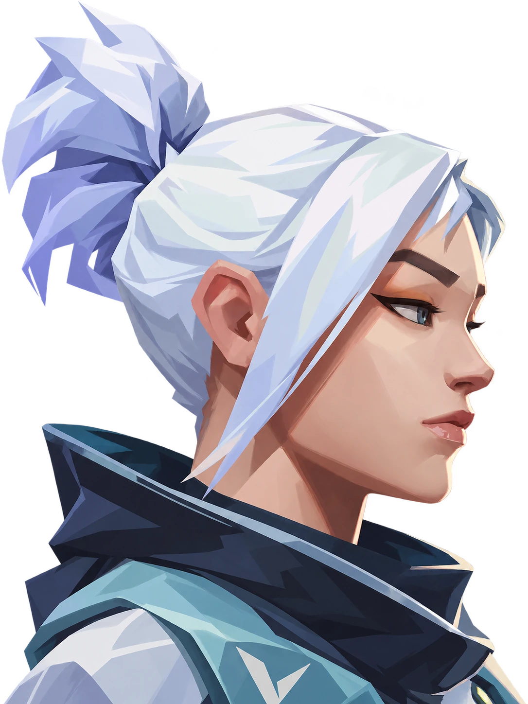
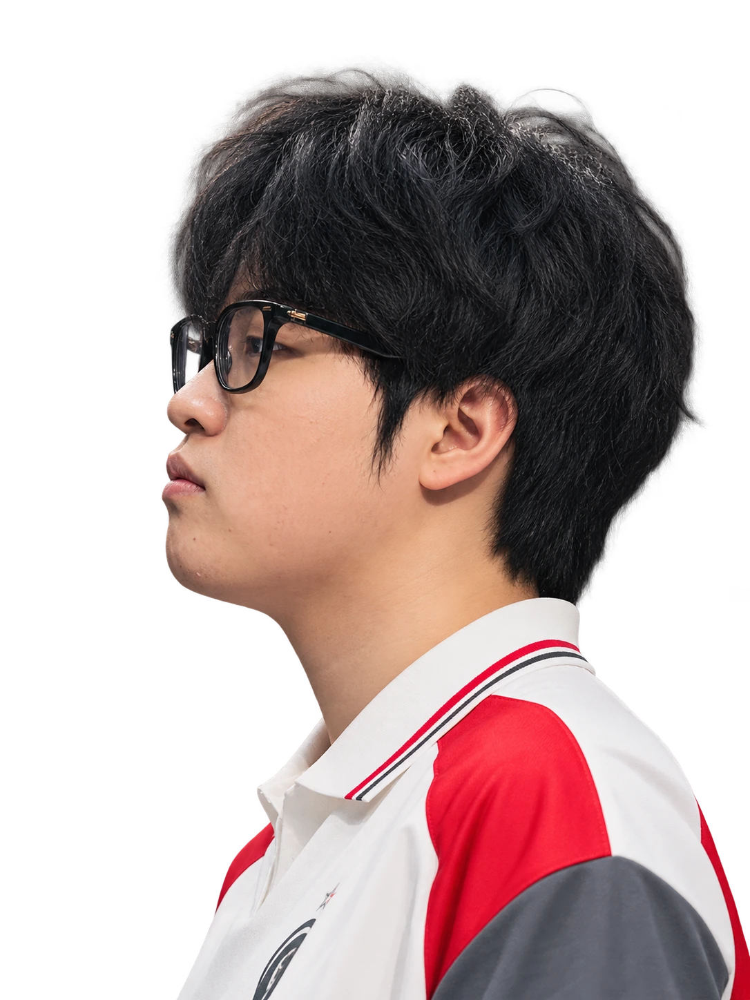
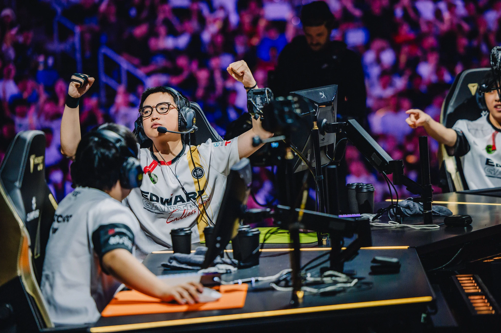

捷风与康康，面对面


JETT / 捷风ZMJJKK / 郑永康
侧脸概念镜头 · AI 辅助重构EDG CHAMPIONS 2024
CHASING GREATNESS.PLAYING FEARLESS.ALL IN, EVERY ROUND.FROM CHINA,TO THE WORLD.
每一枪，都全力以赴。
从中国赛场，走向世界之巅。
赛场内外 / 2023—2026MOMENTS
THAT MATTER.
THAT MATTER.
Still hungry.
Still all in.
Still all in.
2026，继续向前。
Every round.
Every year.
Every year.
每一场，全力以赴。
THE AGENT COLLECTIONHEROES.
HEROES.
One KangKang.
从疾风破点，到一击制胜。
选择英雄，查看康康的职业数据。
捷风
Jett.
43% 全英雄使用占比
290职业出场地图
269.7平均战斗评分 ACS
1.28击杀 / 死亡 K:D
5,850总击杀
1,216首杀
VLR 全时期已收录职业数据 · 2026-11-02 快照 · 出场单位为地图，使用占比不是胜率。查看来源 ↗
SEOUL / 25 AUGUST 2024WORLD
WORLD
CHAMPIONS.
2024 全球冠军赛 · 总决赛EDG / TEAM HERETICS
ONE FINAL.
All in.
五张地图，111 次击杀。
康康的冠军赛 MVP 时刻。
111TOTAL KILLS / GRAND FINAL
Haven / 隐世修所6 : 13+
首图失利。Team Heretics 拿下 Haven，EDG 在下一张地图作出回应。
Sunset / 日落之城13 : 4+
强势扳平。EDG 将系列赛比分追至 1 : 1。
Lotus / 莲华古城13 : 9+
EDG 赢下第三图，系列赛 2 : 1 领先。
Bind / 源工重镇11 : 13+
Team Heretics 扳平比分，冠军归属留到最后一张地图。
Abyss / 幽邃地窟13 : 9+
EDG 赢下决胜图，捧起 2024 全球冠军赛奖杯。
历史赛事档案，比分按 EDG : TH 展示。
RUN IT
BACK.
↗在哔哩哔哩重温冠军高光